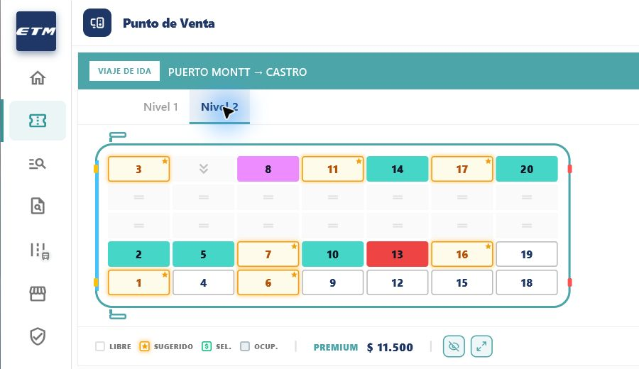
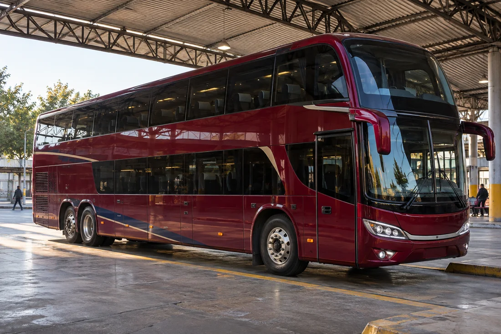
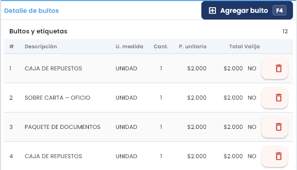
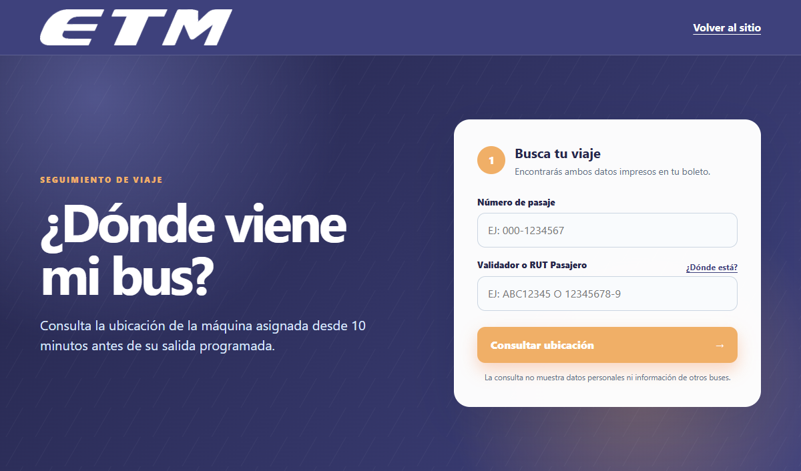
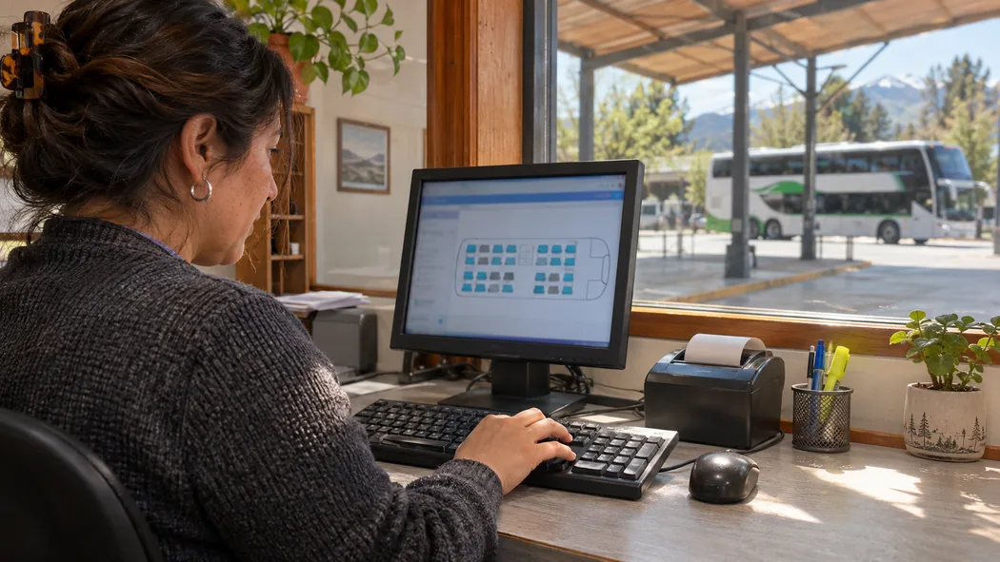

Pasajes
Elige la salida, revisa los asientos por piso y emite el pasaje. Cada venta queda asociada a la caja de la agencia.


Vende pasajes, despacha encomiendas y ubica cada bus en ruta. Sistemas chilenos para quienes operan el transporte interurbano.
Conocer los sistemas
 BK-0830-09
BK-0830-09
Una mirada al trabajo diario en ETM y Bus-Sur.
Elige la salida, revisa los asientos por piso y emite el pasaje. Cada venta queda asociada a la caja de la agencia.

Registra los bultos, imprime sus etiquetas y consulta los movimientos de la guía desde la sucursal de origen hasta la entrega.

La agencia consulta la ubicación que reporta el GPS. El pasajero revisa el avance de su bus desde el portal «¿Dónde viene mi bus?».

Conectamos tu operación con los canales donde compran tus pasajeros y con las áreas que administran la empresa.

Cuéntame cómo trabajan tus agencias y coordinemos una demostración para tu equipo.
Pablo Barría GentaFundador de BUSKIT pablo@bus-kit.com